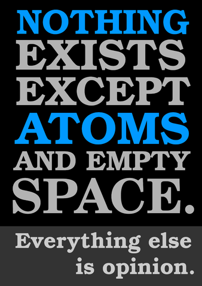

OCR 엔진은 오픈소스 tesseract를 비롯하여 구글, 네이버, Azure가 한국어 OCR 인식에서 강점을 보이고 있다.
tesseract 오픈 소스먼저 tesseract 오픈 소스 팩키지를 활용하여 한국어 인식을 한다. 70 페이지로 다소 공청회 자료집이 두꺼운 관계로 278초 대략 4~5분 정도 소요된다.
library(tesseract)
library(tictoc)
fair_pdf <- image_read_pdf("data/fair_hearing.pdf")
if(is.na(match("kor", tesseract_info()$available)))
tesseract_download("kor")
tic()
fair_text <- tesseract::ocr(fair_pdf, engine = tesseract(language = "kor"))
toc()
# 278.035 sec elapsed
dir.create("data/ocred", showWarnings = FALSE)
fair_text %>%
write_rds("data/ocred/fair_tesseract.rds")먼저 OCR 대상 이미지, 338px-Atomist_quote_from_Democritus 다운로드한다.
library(tidyverse)
library(magick)
download.file(url = "https://upload.wikimedia.org/wikipedia/commons/thumb/a/af/Atomist_quote_from_Democritus.png/338px-Atomist_quote_from_Democritus.png", destfile = "fig/ocr-wiki-image.png", mode = 'wb')
ocr_eng_img <- image_read("fig/ocr-wiki-image.png")
ocr_eng_img
curl 테스트먼저 curl 명령어를 통해서 쉘에서 제대로 동작하는지 테스트한다.
AzureVision 팩키지AzureVision를 사용하면 훨씬 수월하게 작업을 이어갈 수 있다. OCR작업은 read_text() 함수를 사용하면 된다.
library(AzureVision)
azure_vision_apikey <- Sys.getenv("AZURE_VISION_APIKEY")
azure_ocr <- computervision_endpoint(
url = "https://koreacentral.api.cognitive.microsoft.com/vision/v3.0/ocr",
key = azure_vision_apikey
)
read_text(azure_ocr, "fig/ocr-wiki-image.png", language = "en")[[1]]
[1] "NOTHING" "EXISTS" "EXCEPT" "ATOMS"
[5] "AND EMPTY" "SPACE." "Everything else" "is opinion." 데이터 과학자 이광춘 저작
kwangchun.lee.7@gmail.com
{kind=link}